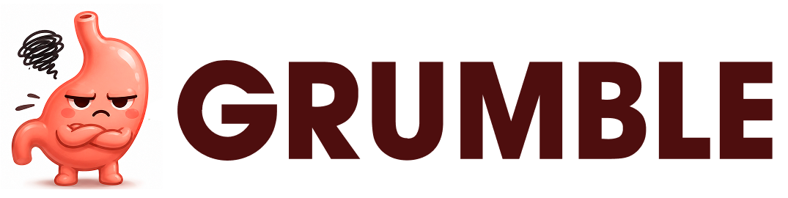
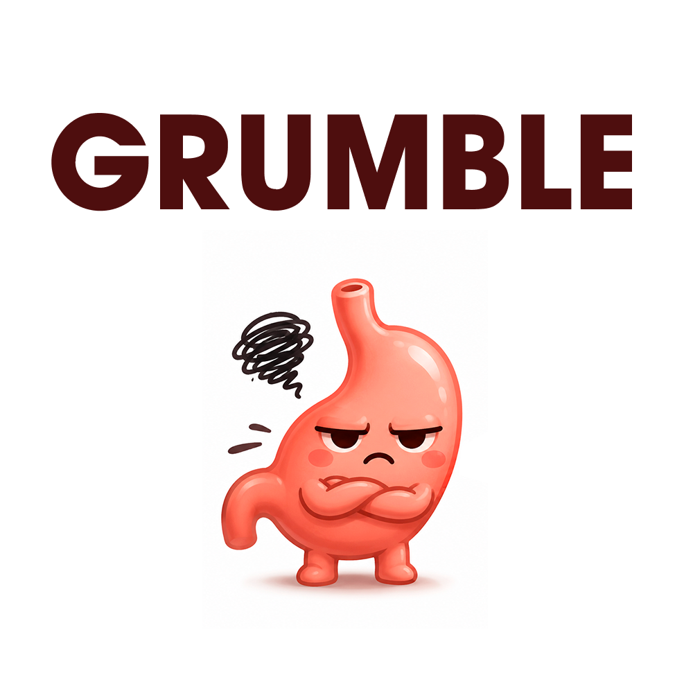

Food apps count what's on the plate. Nobody asks who's across the table.
Grumble helps with what you eat, when you eat, and who you eat with.
"A cup of rice, a palm of chicken." Real numbers from USDA, and the rest of the day rebalances. You keep the vaca frita.
"Late" is measured from your bedtime, not the clock. A night-shift nurse's 2 am dinner isn't late.
Every Tuesday, 6:30, at Versailles. Survivors host, donors pay, and you walk down Calle Ocho after.
Distress doesn't show up as overeating. It shows up as skipped meals, no fiber, and a glucose number drifting up.
NHANES 2011–2014, 808 US cancer survivors, by PHQ-9 depression score: none (0–4, n=493) vs severe (15+, n=42). Unweighted medians, observational. There's no loneliness question in NHANES; Grumble asks it.
Starts with one meal you love, in your words. Every visit adds to it; nothing you said no to comes back.
Log a burger at lunch and dinner becomes lean protein and vegetables. A spike bar and a running "how today's going".
Same plate at 7 vs 9:30, with or without a walk, on a curve: what happened to people like you, never a forecast.
71, Hialeah. Breast cancer, three years out. Prediabetes. In the coaching program and it isn't reaching her: 37% of her calories after 8 pm, the last bite at ten, alone.
Open Grumble →Opens http://localhost:3000/today?demo. Different port? Add ?app=http://localhost:3456 to this page's URL.
Four levers. One evening. Someone across the table.
What's real, what's not. NHANES is real survivors. The program and CGM patterns are the challenge's synthetic data, and we say so on screen: "people like you", a range, never a forecast. Nutrients are USDA.
Next. Pair a real CGM. The coach view at Sylvester: who to call first. Kreyòl for the check-in. The first real Tuesday at Versailles.
